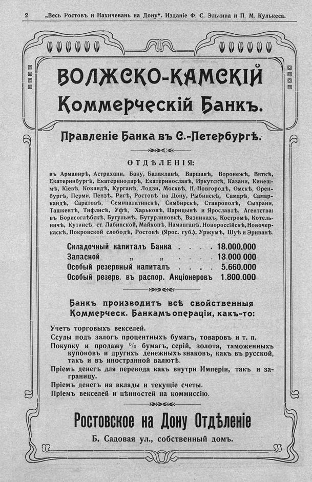

Лист источника 8
Скан

Распознанный текст
2 „Весь Ростовъ и Нахичевань на Дону“. Изданіе Ф. С. Элькина и П. М. Кулькеса.
ВОЛЖСКО-КАМСКІЙ
Коммерческій Банкъ.
Правленіе Банка въ С.-Петербургѣ.
ОТДѢЛЕНІЯ:
въ Армавирѣ, Астрахани, Баку, Балаклавѣ, Варшавѣ, Воронежѣ, Вяткѣ,
Екатеринбургѣ, Екатеринодарѣ, Екатеринославѣ, Иркутскѣ, Казани, Кинеш-
мѣ, Кіевѣ, Кокандѣ, Курганѣ, Лодзи, Москвѣ, Н.-Новгородѣ, Омскѣ, Орен-
бургѣ, Перми, Пензѣ, Ригѣ, Ростовѣ на Дону, Рыбинскѣ, Самарѣ, Самар-
кандѣ, Саратовѣ, Семипалатинскѣ, Симбирскѣ, Ставрополѣ, Сызрани,
Ташкентѣ, Тифлисѣ, Уфѣ, Харьковѣ, Царицынѣ и Ярославлѣ. Агентства:
въ Борисоглѣбскѣ, Бугульмѣ, Бутурлиновкѣ, Вязникахъ, Костромѣ, Котель-
ничѣ, Кутаисѣ, ст. Лабинской, Майкопѣ, Наманганѣ, Новороссійскѣ, Новочер-
каскѣ, Покровской слободѣ, Ростовѣ (Ярос. губ.), Уржумѣ, Шуѣ и Эриванѣ.
Складочный капиталъ Банка . . . . 18.000.000
Запасной „ „ . 13.000.000
Особый резервный капиталъ . . . . 5.660.000
Особый резерв. въ распор. Акціонеровъ 1.800.000
Банкъ производитъ всѣ свойственныя
Коммерческ. Банкамъ операціи, какъ-то:
Учетъ торговыхъ векселей.
Ссуды подъ залогъ процентныхъ бумагъ, товаровъ и т. п.
Покупку и продажу % бумагъ, серій, золота, таможенныхъ
купоновъ и другихъ денежныхъ знаковъ, какъ въ русской,
такъ и въ иностранной валютѣ.
Пріемъ денегъ для перевода какъ внутри Имперіи, такъ и за-
границу.
Пріемъ денегъ на вклады и текущіе счеты.
Пріемъ векселей и цѣнностей на коммиссію.
Ростовское на Дону Отдѣленіе
Б. Садовая ул., собственный домъ.